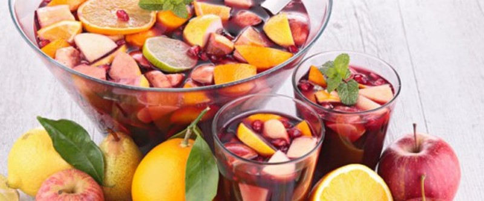

Безалкогольный пунш

Нарезать 1 лимон, 1 апельсин, 1 яблоко и положить в емкость. Пучок мяты порвать туда же. Порезанные фрукты засыпать 7 ч.л. сахара, добавить 1 ч.л. корицы. Фрукты нужно подавить. После того, как фрукты пустят сок, накрыть емкость крышкой и оставить настояться 10 минут. Теперь нужно заварить 200 мл. черного чая и залить ей смесь из фруктов. И снова оставить настояться 5 минут. Осталось через сито перелить получившуюся жидкость в кувшин.